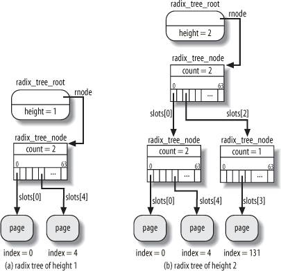

{% include JB/setup %}
{% raw %}
<div>


<a name="understandlk-CHP-15-SECT-1"></a>
<h3 class="docSection1Title">15.1. The Page Cache</h3><a name="IDX-CHP-15-3753"></a>
<p class="docText1">The <span class="docEmphasis">page cache</span> is the main disk cache used by the Linux kernel. In most cases, the kernel refers to the page cache when reading from or writing to disk. New pages are added to the page cache to satisfy User Mode processes's read requests. If the page is not already in the cache, a new entry is added to the cache and filled with the data read from the disk. If there is enough free memory, the page is kept in the cache for an indefinite period of time and can then be reused by other processes without accessing the disk.</p>
<p class="docText1">Similarly, before writing a page of data to a block device, the kernel verifies whether the corresponding page is already included in the cache; if not, a new entry is added to the cache and filled with the data to be written on disk. The I/O data transfer does not start immediately: the disk update is delayed for a few seconds, thus giving a chance to the processes to further modify the data to be written (in other words, the kernel implements deferred write operations).</p>
<p class="docText1">Kernel code and kernel data structures don't need to be read from or written to disk.<sup class="docFootnote"><a class="pcalibre5 docLink pcalibre1" href="#understandlk-CHP-15-FN1">[*]</a></sup> Thus, the pages included in the page cache can be of the following types:</p><blockquote class="calibre22"><p class="docFootnote1"><sup class="calibre24"><a name="understandlk-CHP-15-FN1">[*]</a></sup> Well, almost never: if you want to resume the whole state of the system after a shutdown, you can perform a "suspend to disk" operation (<span class="docEmphasis">hibernation</span><a name="IDX-CHP-15-3754"></a> 
), which saves the content of the whole RAM on a swap partition. We won't further discuss this case.</p></blockquote>
<ul class="calibre11"><li class="calibre12"><p class="docText1">Pages containing data of regular files; in <a class="pcalibre5 docLink pcalibre1" href="understandlk-CHP-16.html#understandlk-CHP-16">Chapter 16</a>, we describe how the kernel handles read, write, and memory mapping operations on them.</p></li><li class="calibre12"><p class="docText1">Pages containing directories; as we'll see in <a class="pcalibre5 docLink pcalibre1" href="understandlk-CHP-18.html#understandlk-CHP-18">Chapter 18</a>, Linux handles the directories much like regular files.</p></li><li class="calibre12"><p class="docText1">Pages containing data directly read from block device files (skipping the filesystem layer); as discussed in <a class="pcalibre5 docLink pcalibre1" href="understandlk-CHP-16.html#understandlk-CHP-16">Chapter 16</a>, the kernel handles them using the same set of functions as for pages containing data of regular files.</p></li><li class="calibre12"><p class="docText1">Pages containing data of User Mode processes that have been swapped out on disk. As we'll see in <a class="pcalibre5 docLink pcalibre1" href="understandlk-CHP-17.html#understandlk-CHP-17">Chapter 17</a>, the kernel could be forced to keep in the page cache some pages whose contents have been already written on a swap area (either a regular file or a disk partition).</p></li><li class="calibre12"><p class="docText1">Pages belonging to files of special filesystems, such as the <span class="docEmphasis">shm</span><a name="IDX-CHP-15-3755"></a> 
 special filesystem used for Interprocess Communication (IPC) shared memory region (see <a class="pcalibre5 docLink pcalibre1" href="understandlk-CHP-19.html#understandlk-CHP-19">Chapter 19</a>).</p></li></ul>
<p class="docText1">As you can see, each page included in the page cache contains data belonging to some file. This fileor more precisely the file's inodeis called the page's <span class="docEmphasis">owner</span>. (As we will see in <a class="pcalibre5 docLink pcalibre1" href="understandlk-CHP-17.html#understandlk-CHP-17">Chapter 17</a>, pages containing swapped-out data have the same owner even if they refer to different swap areas.)</p>
<p class="docText1">Practically all <tt class="calibre25">read( )</tt> and <tt class="calibre25">write( )</tt> file operations rely on the page cache. The only exception occurs when a process opens a file with the <tt class="calibre25">O_DIRECT</tt> flag set: in this case, the page cache is bypassed and the I/O data transfers make use of buffers in the User Mode address space of the process (see the section "<a class="pcalibre5 docLink pcalibre1" href="understandlk-CHP-16-SECT-3.html#understandlk-CHP-16-SECT-3">Direct I/O Transfers</a>" in <a class="pcalibre5 docLink pcalibre1" href="understandlk-CHP-16.html#understandlk-CHP-16">Chapter 16</a>); several database applications make use of the <tt class="calibre25">O_DIRECT</tt> flag so that they can use their own disk caching algorithm.</p>
<p class="docText1">Kernel designers have implemented the page cache to fulfill two main requirements:</p>
<ul class="calibre11"><li class="calibre12"><p class="docText1">Quickly locate a specific page containing data relative to a given owner. To take the maximum advantage from the page cache, searching it should be a very fast operation.</p></li><li class="calibre12"><p class="docText1">Keep track of how every page in the cache should be handled when reading or writing its content. For instance, reading a page from a regular file, a block device file, or a swap area must be performed in different ways, thus the kernel must select the proper operation depending on the page's owner.</p></li></ul>
<p class="docText1">The unit of information kept in the page cache is, of course, a whole page of data. As we'll see in <a class="pcalibre5 docLink pcalibre1" href="understandlk-CHP-18.html#understandlk-CHP-18">Chapter 18</a>, a page does not necessarily contain physically adjacent disk blocks, so it cannot be identified by a device number and a block number. Instead, a page in the page cache is identified by an owner and by an index within the owner's datausually, an inode and an offset inside the corresponding file.</p>
<a name="understandlk-CHP-15-SECT-1.1"></a>
<h4 class="docSection2Title">15.1.1. The address_space Object</h4><a name="IDX-CHP-15-3756"></a>
<a name="IDX-CHP-15-3757"></a>
<a name="IDX-CHP-15-3758"></a>
<p class="docText1">The core data structure of the page cache is the <tt class="calibre25">address_space</tt> object, a data structure embedded in the inode object that owns the page.<sup class="docFootnote"><a class="pcalibre5 docLink pcalibre1" href="#understandlk-CHP-15-FN2">[*]</a></sup> Many pages in the cache may refer to the same owner, thus they may be linked to the same <tt class="calibre25">address_space</tt> object. This object also establishes a link between the owner's pages and a set of methods that operate on these pages.</p><blockquote class="calibre22"><p class="docFootnote1"><sup class="calibre24"><a name="understandlk-CHP-15-FN2">[*]</a></sup> An exception occurs for pages that have been swapped out. As we will see in <a class="pcalibre5 docLink pcalibre1" href="understandlk-CHP-17.html#understandlk-CHP-17">Chapter 17</a>, these pages have a common <tt class="calibre42">address_space</tt> object not included in any inode.</p></blockquote>
<p class="docText1">Each page descriptor includes two fields called <tt class="calibre25">mapping</tt> and <tt class="calibre25">index</tt>, which link the page to the page cache (see the section "<a class="pcalibre5 docLink pcalibre1" href="understandlk-CHP-8-SECT-1.html#understandlk-CHP-8-SECT-1.1">Page Descriptors</a>" in <a class="pcalibre5 docLink pcalibre1" href="understandlk-CHP-8.html#understandlk-CHP-8">Chapter 8</a>). The first field points to the <tt class="calibre25">address_space</tt> object of the inode that owns the page. The second field specifies the offset in page-size units within the owner's "address space," that is, the position of the page's data inside the owner's disk image. These two fields are used when looking for a page in the page cache.</p>
<p class="docText1">Quite surprisingly, the page cache may happily contain multiple copies of the same disk data. For instance, the same 4-KB block of data of a regular file can be accessed in the following ways:</p>
<ul class="calibre11"><li class="calibre12"><p class="docText1">Reading the file; hence, the data is included in a page owned by the regular file's inode.</p></li><li class="calibre12"><p class="docText1">Reading the block from the device file (disk partition) that hosts the file; hence, the data is included in a page owned by the master inode of the block device file.</p></li></ul>
<p class="docText1">Thus, the same disk data appears in two different pages referenced by two different <tt class="calibre25">address_space</tt> objects.</p>
<p class="docText1">The fields of the <tt class="calibre25">address_space</tt> object are shown in <a class="pcalibre5 docLink pcalibre1" href="#understandlk-CHP-15-TABLE-1">Table 15-1</a>.</p>
<a name="understandlk-CHP-15-TABLE-1"></a><p class="calibre14"><table cellspacing="0" frame="hsides" rules="all" cellpadding="4" width="100%" class="calibre15"><caption class="calibre33"><h5 class="docFigureTitle">Table 15-1. The fields of the address_space object</h5></caption><colgroup class="calibre16"><col class="calibre17"/><col class="calibre17"/><col class="calibre17"/></colgroup><thead class="calibre18"><tr class="calibre34"><th class="thead" scope="col"><p class="docText1"><span class="calibre5">Type</span></p></th><th class="thead" scope="col"><p class="docText1"><span class="calibre5">Field</span></p></th><th class="thead" scope="col"><p class="docText1"><span class="calibre5">Description</span></p></th></tr></thead><tr class="calibre2"><td class="docTableCell"><p class="docText2"><tt class="calibre25">struct inode *</tt></p></td><td class="docTableCell"><p class="docText2"><tt class="calibre25">host</tt></p></td><td class="docTableCell"><p class="docText2">Pointer to the inode hosting this object, if any</p></td></tr><tr class="calibre2"><td class="docTableCell"><p class="docText2"><tt class="calibre25">struct</tt></p><p class="docText2"><tt class="calibre25">radix_tree_root</tt></p></td><td class="docTableCell" valign="top"><p class="docText2"><tt class="calibre25">page_tree</tt></p></td><td class="docTableCell" valign="top"><p class="docText2">Root of radix tree identifying the owner's pages</p></td></tr><tr class="calibre2"><td class="docTableCell"><p class="docText2"><tt class="calibre25">spinlock_t</tt></p></td><td class="docTableCell"><p class="docText2"><tt class="calibre25">tree_lock</tt></p></td><td class="docTableCell"><p class="docText2">Spin lock protecting the radix tree</p></td></tr><tr class="calibre2"><td class="docTableCell"><p class="docText2"><tt class="calibre25">unsigned int</tt></p></td><td class="docTableCell"><p class="docText2"><tt class="calibre25">i_mmap_writable</tt></p></td><td class="docTableCell"><p class="docText2">Number of shared memory mappings in the address space</p></td></tr><tr class="calibre2"><td class="docTableCell"><p class="docText2"><tt class="calibre25">struct</tt></p><p class="docText2"><tt class="calibre25">prio_tree_root</tt></p></td><td class="docTableCell" valign="top"><p class="docText2"><tt class="calibre25">i_mmap</tt></p></td><td class="docTableCell" valign="top"><p class="docText2">Root of the radix priority search tree (see <a class="pcalibre5 docLink pcalibre1" href="understandlk-CHP-17.html#understandlk-CHP-17">Chapter 17</a>)</p></td></tr><tr class="calibre2"><td class="docTableCell"><p class="docText2"><tt class="calibre25">struct list_head</tt></p></td><td class="docTableCell"><p class="docText2"><tt class="calibre25">i_mmap_nonlinear</tt></p></td><td class="docTableCell"><p class="docText2">List of non-linear memory regions in the address space</p></td></tr><tr class="calibre2"><td class="docTableCell"><p class="docText2"><tt class="calibre25">spinlock_t</tt></p></td><td class="docTableCell"><p class="docText2"><tt class="calibre25">i_mmap_lock</tt></p></td><td class="docTableCell"><p class="docText2">Spin lock protecting the radix priority search tree</p></td></tr><tr class="calibre2"><td class="docTableCell"><p class="docText2"><tt class="calibre25">unsigned int</tt></p></td><td class="docTableCell"><p class="docText2"><tt class="calibre25">TRuncate_count</tt></p></td><td class="docTableCell"><p class="docText2">Sequence counter used when truncating the file</p></td></tr><tr class="calibre2"><td class="docTableCell"><p class="docText2"><tt class="calibre25">unsigned long</tt></p></td><td class="docTableCell"><p class="docText2"><tt class="calibre25">nrpages</tt></p></td><td class="docTableCell"><p class="docText2">Total number of owner's pages</p></td></tr><tr class="calibre2"><td class="docTableCell"><p class="docText2"><tt class="calibre25">unsigned long</tt></p></td><td class="docTableCell"><p class="docText2"><tt class="calibre25">writeback_index</tt></p></td><td class="docTableCell"><p class="docText2">Page index of the last write-back operation on the owner's pages</p></td></tr><tr class="calibre2"><td class="docTableCell"><p class="docText2"><tt class="calibre25">struct address_space_operations *</tt></p></td><td class="docTableCell"><p class="docText2"><tt class="calibre25">a_ops</tt></p></td><td class="docTableCell"><p class="docText2">Methods that operate on the owner's pages</p></td></tr><tr class="calibre2"><td class="docTableCell"><p class="docText2">unsigned long</p></td><td class="docTableCell"><p class="docText2">flags</p></td><td class="docTableCell"><p class="docText2">Error bits and memory allocator flags</p></td></tr><tr class="calibre2"><td class="docTableCell"><p class="docText2">struct backing_dev_info *</p></td><td class="docTableCell"><p class="docText2">backing_dev_info</p></td><td class="docTableCell"><p class="docText2">Pointer to the <tt class="calibre25">backing_dev_info</tt> of the block device holding the data of this owner</p></td></tr><tr class="calibre2"><td class="docTableCell"><p class="docText2">spinlock_t</p></td><td class="docTableCell"><p class="docText2">private_lock</p></td><td class="docTableCell"><p class="docText2">Usually, spin lock used when managing the <tt class="calibre25">private_list</tt> list</p></td></tr><tr class="calibre2"><td class="docTableCell"><p class="docText2">struct list head</p></td><td class="docTableCell"><p class="docText2">private_list</p></td><td class="docTableCell"><p class="docText2">Usually, a list of dirty buffers of indirect blocks associated with the inode</p></td></tr><tr class="calibre2"><td class="docTableCell" valign="top"><p class="docText2">struct address_space *</p></td><td class="docTableCell" valign="top"><p class="docText2">assoc_mapping</p></td><td class="docTableCell"><p class="docText2">Usually, pointer to the <tt class="calibre25">address_space</tt> object of the block device including the indirect blocks</p></td></tr></table></p><br class="calibre7"/>
<p class="docText1">If the owner of a page in the page cache is a file, the <tt class="calibre25">address_space</tt> object is embedded in the <tt class="calibre25">i_data</tt> field of a VFS inode object. The <tt class="calibre25">i_mapping</tt> field of the inode always points to the <tt class="calibre25">address_space</tt> object of the owner of the pages containing the inode's data. The <tt class="calibre25">host</tt> field of the <tt class="calibre25">address_space</tt> object points to the inode object in which the descriptor is embedded.</p>
<p class="docText1">Thus, if a page belongs to a file that is stored in an Ext3 filesystem<a name="IDX-CHP-15-3759"></a> 
, the owner of the page is the inode of the file and the corresponding <tt class="calibre25">address_space</tt> object is stored in the <tt class="calibre25">i_data</tt> field of the VFS inode object. The <tt class="calibre25">i_mapping</tt> field of the inode points to the <tt class="calibre25">i_data</tt> field of the same inode, and the <tt class="calibre25">host</tt> field of the <tt class="calibre25">address_space</tt> object points to the same inode.</p>
<p class="docText1">Sometimes, however, things are more complicated. If a page contains data read from a block device filethat is, it stores "raw" data of a block devicethe <tt class="calibre25">address_space</tt> object is embedded in the "master" inode of the file in the <span class="docEmphasis">bdev</span><a name="IDX-CHP-15-3760"></a> 
 special filesystem associated with the block device (this inode is referenced by the <tt class="calibre25">bd_inode</tt> field of the block device descriptor, see the section "<a class="pcalibre5 docLink pcalibre1" href="understandlk-CHP-14-SECT-4.html#understandlk-CHP-14-SECT-4.1">Block Devices</a>" in <a class="pcalibre5 docLink pcalibre1" href="understandlk-CHP-14.html#understandlk-CHP-14">Chapter 14</a>). Therefore, the <tt class="calibre25">i_mapping</tt> field of an inode of a block device file points to the <tt class="calibre25">address_space</tt> object embedded in the master inode; correspondingly, the <tt class="calibre25">host</tt> field of the <tt class="calibre25">address_space</tt> object points to the master inode. In this way, all pages containing data read from a block device have the same <tt class="calibre25">address_space</tt> object, even if they have been accessed by referring to different block device files.</p>
<p class="docText1">The <tt class="calibre25">i_mmap</tt>, <tt class="calibre25">i_mmap_writable</tt>, <tt class="calibre25">i_mmap_nonlinear</tt>, and <tt class="calibre25">i_mmap_lock</tt> fields refer to memory mapping and reverse mapping. We'll discuss these topics in <a class="pcalibre5 docLink pcalibre1" href="understandlk-CHP-16.html#understandlk-CHP-16">Chapter 16</a> and <a class="pcalibre5 docLink pcalibre1" href="understandlk-CHP-17.html#understandlk-CHP-17">Chapter 17</a>.</p>
<p class="docText1">The <tt class="calibre25">backing_dev_info</tt> field points the <tt class="calibre25">backing_dev_info</tt> descriptor associated with the block device storing the data of the owner. As explained in the section "<a class="pcalibre5 docLink pcalibre1" href="understandlk-CHP-14-SECT-3.html#understandlk-CHP-14-SECT-3.1">Request Queue Descriptors</a>" in <a class="pcalibre5 docLink pcalibre1" href="understandlk-CHP-14.html#understandlk-CHP-14">Chapter 14</a>, the <tt class="calibre25">backing_dev_info</tt> structure is usually embedded in the request queue descriptor of the block device.</p>
<p class="docText1">The <tt class="calibre25">private_list</tt> field is the head of a generic list that can be freely used by the filesystem for its specific purposes. For example, the Ext2 filesystem<a name="IDX-CHP-15-3761"></a> 
 makes use of this list to collect the dirty buffers of "indirect" blocks associated with the inode (see the section "<a class="pcalibre5 docLink pcalibre1" href="understandlk-CHP-18-SECT-6.html#understandlk-CHP-18-SECT-6.3">Data Blocks Addressing</a>" in <a class="pcalibre5 docLink pcalibre1" href="understandlk-CHP-18.html#understandlk-CHP-18">Chapter 18</a>). When a flush operation forces the inode to be written to disk, the kernel flushes also all the buffers in this list. Moreover, the Ext2 filesystem stores in the <tt class="calibre25">assoc_mapping</tt> field a pointer to the <tt class="calibre25">address_space</tt> object of the block device containing the indirect blocks; it also uses the <tt class="calibre25">assoc_mapping-&gt;private_lock</tt> spin lock to protect the lists of indirect blocks in multiprocessor systems.</p>
<p class="docText1">A crucial field of the <tt class="calibre25">address_space</tt> object is <tt class="calibre25">a_ops</tt>, which points to a table of type <tt class="calibre25">address_space_operations</tt> containing the methods that define how the owner's pages are handled. These methods are shown in <a class="pcalibre5 docLink pcalibre1" href="#understandlk-CHP-15-TABLE-2">Table 15-2</a>.</p>
<a name="understandlk-CHP-15-TABLE-2"></a><p class="calibre14"><table cellspacing="0" frame="hsides" rules="all" cellpadding="4" width="100%" class="calibre15"><caption class="calibre33"><h5 class="docFigureTitle">Table 15-2. The methods of the address_space object</h5></caption><colgroup class="calibre16"><col class="calibre17"/><col class="calibre17"/></colgroup><thead class="calibre18"><tr class="calibre34"><th class="thead" scope="col"><p class="docText1"><span class="calibre5">Method</span></p></th><th class="thead" scope="col"><p class="docText1"><span class="calibre5">Description</span></p></th></tr></thead><tr class="calibre2"><td class="docTableCell"><p class="docText2"><tt class="calibre25">writepage</tt></p></td><td class="docTableCell"><p class="docText2">Write operation (from the page to the owner's disk image)</p></td></tr><tr class="calibre2"><td class="docTableCell"><p class="docText2"><tt class="calibre25">readpage</tt></p></td><td class="docTableCell"><p class="docText2">Read operation (from the owner's disk image to the page)</p></td></tr><tr class="calibre2"><td class="docTableCell"><p class="docText2"><tt class="calibre25">sync_page</tt></p></td><td class="docTableCell"><p class="docText2">Start the I/O data transfer of already scheduled operations on owner's pages</p></td></tr><tr class="calibre2"><td class="docTableCell"><p class="docText2">writepages</p></td><td class="docTableCell"><p class="docText2">Write back to disk a given number of dirty owner's pages</p></td></tr><tr class="calibre2"><td class="docTableCell"><p class="docText2">set_page_dirty</p></td><td class="docTableCell"><p class="docText2">Set an owner's page as dirty</p></td></tr><tr class="calibre2"><td class="docTableCell"><p class="docText2">readpages</p></td><td class="docTableCell"><p class="docText2">Read a list of owner's pages from disk</p></td></tr><tr class="calibre2"><td class="docTableCell"><p class="docText2"><tt class="calibre25">prepare_write</tt></p></td><td class="docTableCell"><p class="docText2">Prepare a write operation (used by disk-based filesystems)</p></td></tr><tr class="calibre2"><td class="docTableCell"><p class="docText2"><tt class="calibre25">commit_write</tt></p></td><td class="docTableCell"><p class="docText2">Complete a write operation (used by disk-based filesystems)</p></td></tr><tr class="calibre2"><td class="docTableCell"><p class="docText2"><tt class="calibre25">bmap</tt></p></td><td class="docTableCell"><p class="docText2">Get a logical block number from a file block index</p></td></tr><tr class="calibre2"><td class="docTableCell"><p class="docText2"><tt class="calibre25">invalidatepage</tt></p></td><td class="docTableCell"><p class="docText2">Invalidate owner's pages (used when truncating the file)</p></td></tr><tr class="calibre2"><td class="docTableCell"><p class="docText2"><tt class="calibre25">releasepage</tt></p></td><td class="docTableCell"><p class="docText2">Used by journaling filesystems<a name="IDX-CHP-15-3762"></a> 
 to prepare the release of a page</p></td></tr><tr class="calibre2"><td class="docTableCell"><p class="docText2"><tt class="calibre25">direct_IO</tt></p></td><td class="docTableCell"><p class="docText2">Direct I/O transfer of the owner's pages (bypassing the page cache)</p></td></tr></table></p><br class="calibre7"/>
<p class="docText1">The most important methods are <tt class="calibre25">readpage</tt>, <tt class="calibre25">writepage</tt>, <tt class="calibre25">prepare_write</tt>, and <tt class="calibre25">commit_write</tt>. We discuss them in <a class="pcalibre5 docLink pcalibre1" href="understandlk-CHP-16.html#understandlk-CHP-16">Chapter 16</a>. In most cases, the methods link the owner inode objects with the low-level drivers that access the physical devices. For instance, the function that implements the <tt class="calibre25">readpage</tt> method for an inode of a regular file knows how to locate the positions on the physical disk device of the blocks corresponding to each page of the file. In this chapter, however, we don't have to discuss the <tt class="calibre25">address_space</tt> methods further.</p>
<a name="understandlk-CHP-15-SECT-1.2"></a>
<h4 class="docSection2Title">15.1.2. The Radix Tree</h4><a name="IDX-CHP-15-3763"></a>
<a name="IDX-CHP-15-3764"></a>
<a name="IDX-CHP-15-3765"></a>
<p class="docText1">In Linux, files can have large sizes, even a few terabytes. When accessing a large file, the page cache may become filled with so many of the file's pages that sequentially scanning all of them would be too time-consuming. In order to perform page cache lookup efficiently, Linux 2.6 makes use of a large set of search trees, one for each <tt class="calibre25">address_space</tt> object.</p>
<p class="docText1">The <tt class="calibre25">page_tree</tt> field of an <tt class="calibre25">address_space</tt> object is the root of a <span class="docEmphasis">radix tree</span>, which contains pointers to the descriptors of the owner's pages. Given a page index denoting the position of the page inside the owner's disk image, the kernel can perform a very fast lookup operation in order to determine whether the required page is already included in the page cache. When looking up the page, the kernel interprets the index as a path inside the radix tree and quickly reaches the position where the page descriptor isor should bestored. If found, the kernel can retrieve from the radix tree the descriptor of the page; it can also quickly determine whether the page is dirty (i.e., to be flushed to disk) and whether an I/O transfer for its data is currently on-going.</p>
<p class="docText1">Each node of the radix tree can have up to 64 pointers to other nodes or to page descriptors. Nodes at the bottom level store pointers to page descriptors (the leaves), while nodes at higher levels store pointers to other nodes (the children). Each node is represented by the <tt class="calibre25">radix_tree_node</tt> data structure, which includes three fields: <tt class="calibre25">slots</tt> is an array of 64 pointers, <tt class="calibre25">count</tt> is a counter of how many pointers in the node are not <tt class="calibre25">NULL</tt>, and <tt class="calibre25">tags</tt> is a two-component array of flags that will be discussed in the section "<a class="pcalibre5 docLink pcalibre1" href="#understandlk-CHP-15-SECT-1.4">The Tags of the Radix Tree</a>" later in this chapter. The root of the tree is represented by a <tt class="calibre25">radix_tree_root</tt> data structure, having three fields: <tt class="calibre25">height</tt> denotes the current tree's height (number of levels excluding the leaves), <tt class="calibre25">gfp_mask</tt> specifies the flags used when requesting memory for a new node, and <tt class="calibre25">rnode</tt> points to the <tt class="calibre25">radix_tree_node</tt> data structure corresponding to the node at level 1 of the tree (if any).</p>
<p class="docText1">Let us consider a simple example. If none of the indices stored in the tree is greater than 63, the tree height is equal to one, because the 64 potential leaves can all be stored in the node at level 1 (see <a class="pcalibre5 docLink pcalibre1" href="#understandlk-CHP-15-FIG-1">Figure 15-1</a> (a)). If, however, a new page descriptor corresponding to index 131 must be stored in the page cache, the tree height is increased to two, so that the radix tree can pinpoint indices up to 4095 (see <a class="pcalibre5 docLink pcalibre1" href="#understandlk-CHP-15-FIG-1">Figure 15-1</a>(b)).</p>
<a name="understandlk-CHP-15-FIG-1"></a><p class="calibre14"><center class="calibre8">
<h5 class="docFigureTitle">Figure 15-1. Two examples of a radix tree</h5>
</center></p><br class="calibre7"/>
<p class="docText1"><a class="pcalibre5 docLink pcalibre1" href="#understandlk-CHP-15-TABLE-3">Table 15-3</a> shows the highest page index and the corresponding maximum file size for each given height of the radix tree on a 32-bit architecture. In this case, the maximum height of a radix tree is six, although it is quite unlikely that the page cache of your system will make use of a radix tree that huge. Because the page index is stored in a 32-bit variable, when the tree has height equal to six, the node at the highest level can have at most four children.</p>
<a name="understandlk-CHP-15-TABLE-3"></a><p class="calibre14"><table cellspacing="0" frame="hsides" rules="all" cellpadding="4" width="100%" class="calibre15"><caption class="calibre33"><h5 class="docFigureTitle">Table 15-3. Highest index and maximum file size for each radix tree height</h5></caption><colgroup class="calibre16"><col class="calibre17"/><col class="calibre17"/><col class="calibre17"/></colgroup><thead class="calibre18"><tr class="calibre34"><th class="thead" scope="col"><p class="docText1"><span class="calibre5">Radix tree height</span></p></th><th class="thead" scope="col"><p class="docText1"><span class="calibre5">Highest index</span></p></th><th class="thead" scope="col"><p class="docText1"><span class="calibre5">Maximum file size</span></p></th></tr></thead><tr class="calibre2"><td class="docTableCell"><p class="docText2"><tt class="calibre25">0</tt></p></td><td class="docTableCell"><p class="docText2">none</p></td><td class="docTableCell"><p class="docText2">0 bytes</p></td></tr><tr class="calibre2"><td class="docTableCell"><p class="docText2"><tt class="calibre25">1</tt></p></td><td class="docTableCell"><p class="docText2">2<sup class="calibre37">6</sup> -1 = 63</p></td><td class="docTableCell"><p class="docText2">256 kilobytes</p></td></tr><tr class="calibre2"><td class="docTableCell"><p class="docText2"><tt class="calibre25">2</tt></p></td><td class="docTableCell"><p class="docText2">2<sup class="calibre37">12</sup> -1 = 4 095</p></td><td class="docTableCell"><p class="docText2">16 megabytes</p></td></tr><tr class="calibre2"><td class="docTableCell"><p class="docText2">3</p></td><td class="docTableCell"><p class="docText2">2<sup class="calibre37">18</sup> -1 = 262 143</p></td><td class="docTableCell"><p class="docText2">1 gigabyte</p></td></tr><tr class="calibre2"><td class="docTableCell"><p class="docText2">4</p></td><td class="docTableCell"><p class="docText2">2<sup class="calibre37">24</sup>-1 = 16 777 215</p></td><td class="docTableCell"><p class="docText2">64 gigabytes</p></td></tr><tr class="calibre2"><td class="docTableCell"><p class="docText2">5</p></td><td class="docTableCell"><p class="docText2">2<sup class="calibre37">30</sup> -1 = 1 073 741 823</p></td><td class="docTableCell"><p class="docText2">4 terabytes</p></td></tr><tr class="calibre2"><td class="docTableCell"><p class="docText2">6</p></td><td class="docTableCell"><p class="docText2">2<sup class="calibre37">32</sup> -1 = 4 294 967 295</p></td><td class="docTableCell"><p class="docText2">16 terabytes</p></td></tr></table></p><br class="calibre7"/>
<p class="docText1">The best way to understand how page lookup is performed is to recall how the paging system makes use of the page tables to translate linear addresses into physical addresses. As discussed in the section "<a class="pcalibre5 docLink pcalibre1" href="understandlk-CHP-2-SECT-4.html#understandlk-CHP-2-SECT-4.1">Regular Paging</a>" in <a class="pcalibre5 docLink pcalibre1" href="understandlk-CHP-2.html#understandlk-CHP-2">Chapter 2</a>, the 20 most significant bits of a linear address are split into two 10-bit long fields: the first field is an offset in the Page Directory, while the second one is an offset in the Page Table pointed to by the proper Page Directory entry.</p>
<p class="docText1">A similar approach is used in the radix tree. The equivalent of the linear address is the page's index. However, the number of fields to be considered in the page's index depends on the height of the radix tree. If the radix tree has height 1, only indices ranging from 0 to 63 can be represented, thus the 6 less significant bits of the page's index are interpreted as the <tt class="calibre25">slots</tt> array index for the single node at level 1. If the radix tree has height 2, the indices that can be represented range from 0 to 4095; the 12 less significant bits of the page's index are thus split in 2 fields of 6 bits each; the most significant field is used as an array index for the node at level 1, while the less significant field is used as an array index for the node at level 2. The procedure is similar for every other radix tree's height. If the height is equal to 6, the 2 most significant bits of the page's index are the array index for the node at level 1, the following 6 bits are the array index for the node at level 2, and so on up to the 6 less significant bits, which are the array index for the node at level 6.</p>
<p class="docText1">If the highest index of a radix tree is smaller than the index of a page that should be added, then the kernel increases the tree height correspondingly; the intermediate nodes of the radix tree depend on the value of the page index (see <a class="pcalibre5 docLink pcalibre1" href="#understandlk-CHP-15-FIG-1">Figure 15-1</a> for an example).</p>
<a name="understandlk-CHP-15-SECT-1.3"></a>
<h4 class="docSection2Title">15.1.3. Page Cache Handling Functions</h4>
<p class="docText1">The basic high-level functions that use the page cache involve finding, adding, and removing a page. Another function based on the previous ones ensures that the cache includes an up-to-date version of a given page.</p>
<a name="understandlk-CHP-15-SECT-1.3.1"></a>
<h5 class="docSection3Title">15.1.3.1. Finding a page</h5>
<p class="docText1">The <tt class="calibre25">find_get_page( )</tt> function receives as its parameters a pointer to an <tt class="calibre25">address_space</tt> object and an offset value. It acquires the address space's spin lock and invokes the <tt class="calibre25">radix_tree_lookup( )</tt> function to search for a leaf node of the radix tree having the required offset. This function, in turn, starts from the root node of the tree and goes down according to the bits of the offset value, as explained in the previous section. If a <tt class="calibre25">NULL</tt> pointer is encountered, the function returns <tt class="calibre25">NULL</tt>; otherwise, it returns the address of a leaf node, that is, the pointer of the required page descriptor. If the requested page is found, <tt class="calibre25">find_get_page( )</tt> increases its usage counter, releases the spin lock, and returns its address; otherwise, the function releases the spin lock and returns <tt class="calibre25">NULL</tt>.</p>
<p class="docText1">The <tt class="calibre25">find_get_pages( )</tt> function is similar to <tt class="calibre25">find_get_page( )</tt>, but it performs a page cache lookup for a group of pages having contiguous indices. It receives as its parameters a pointer to an <tt class="calibre25">address_space</tt> object, the offset in the address space from where to start searching, the maximum number of pages to be retrieved, and a pointer to an array of pages descriptors to be filled by the function. To perform the lookup operation, <tt class="calibre25">find_get_pages( )</tt> relies on the <tt class="calibre25">radix_tree_gang_lookup( )</tt> function, which fills the array of pointers and returns the number of pages found. The returned pages have ascending indices, although there may be holes in the indices because some pages may not be in the page cache.</p>
<p class="docText1">There are several other functions that perform search operations on the page cache. For example, the <tt class="calibre25">find_lock_page( )</tt> function is similar to <tt class="calibre25">find_get_page( )</tt>, but it increases the usage counter of the returned page and invokes <tt class="calibre25">lock_page( )</tt> to set the <tt class="calibre25">PG_locked</tt> flagthus, when the function returns, the page can be accessed exclusively by the caller. The <tt class="calibre25">lock_page( )</tt> function, in turn, blocks the current process if the page is already locked. To that end, it invokes the <tt class="calibre25">_ _wait_on_bit_lock( )</tt> function on the <tt class="calibre25">PG_locked</tt> bit. The latter function puts the current process in the <tt class="calibre25">TASK_UNINTERRUPTIBLE</tt> state, stores the process descriptor in a wait queue, executes the <tt class="calibre25">sync_page</tt> method of the <tt class="calibre25">address_space</tt> object to unplug the request queue of the block device containing the file, and finally invokes <tt class="calibre25">schedule( )</tt> to suspend the process until the <tt class="calibre25">PG_locked</tt> flag of the page is cleared. To unlock a page and wake up the processes sleeping in the wait queue, the kernel makes use of the <tt class="calibre25">unlock_page( )</tt> function.</p>
<p class="docText1">The <tt class="calibre25">find_trylock_page( )</tt> function is similar to <tt class="calibre25">find_lock_page( )</tt>, except that it never blocks: if the requested page is already locked, the function returns an error code. Finally, the <tt class="calibre25">find_or_create_page( )</tt> function executes <tt class="calibre25">find_lock_page( )</tt>; however, if the page is not found, a new page is allocated and inserted in the page cache.</p>
<a name="understandlk-CHP-15-SECT-1.3.2"></a>
<h5 class="docSection3Title">15.1.3.2. Adding a page</h5><a name="IDX-CHP-15-3766"></a>
<a name="IDX-CHP-15-3767"></a>
<a name="IDX-CHP-15-3768"></a>
<a name="IDX-CHP-15-3769"></a>
<a name="IDX-CHP-15-3770"></a>
<a name="IDX-CHP-15-3771"></a>
<a name="IDX-CHP-15-3772"></a>
<a name="IDX-CHP-15-3773"></a>
<a name="IDX-CHP-15-3774"></a>
<a name="IDX-CHP-15-3775"></a>
<a name="IDX-CHP-15-3776"></a>
<a name="IDX-CHP-15-3777"></a>
<p class="docText1">The <tt class="calibre25">add_to_page_cache( )</tt> function inserts a new page descriptor in the page cache. It receives as its parameters the address <tt class="calibre25">page</tt> of the page descriptor, the address <tt class="calibre25">mapping</tt> of an <tt class="calibre25">address_space</tt> object, the value <tt class="calibre25">offset</tt> representing the page index inside the address space, and the memory allocation flags <tt class="calibre25">gfp_mask</tt> to be used when allocating the new nodes of the radix tree. The function performs the following operations:</p>
<div class="calibre44"><ol class="docList1" type="1"><li class="calibre12"><div class="calibre45"><p class="docList">Invokes <tt class="calibre25">radix_tree_preload( )</tt>, which disables kernel preemption and fills the per-CPU variable <tt class="calibre25">radix_tree_preloads</tt> with a few free <tt class="calibre25">radix_tree_node</tt> structures. Allocation of <tt class="calibre25">radix_tree_node</tt> structures is done by means of the <tt class="calibre25">radix_tree_node_cachep</tt> slab allocator cache. If <tt class="calibre25">radix_tree_preload( )</tt> fails in preallocating the <tt class="calibre25">radix_tree_node</tt> structures, the <tt class="calibre25">add_to_page_cache( )</tt> function terminates by returning the error code <tt class="calibre25">-ENOMEM</tt>. Otherwise, if <tt class="calibre25">radix_tree_preload( )</tt> succeeds, <tt class="calibre25">add_to_page_cache( )</tt> can be sure that the insertion of the new page descriptor will not fail for lack of free memory, at least for files of size up to 64 GB.</p></div></li><li class="calibre12"><div class="calibre45"><p class="docList">Acquires the <tt class="calibre25">mapping-&gt;tree_lock</tt> spin locknotice that kernel preemption has already been disabled by <tt class="calibre25">radix_tree_preload( )</tt>.</p></div></li><li class="calibre12"><div class="calibre45"><p class="docList">Invokes <tt class="calibre25">radix_tree_insert( )</tt> to insert the new node in the tree. This function performs the following steps:</p><div class="calibre44"><ol class="docList4" type="a"><li class="calibre12"><div class="calibre45"><p class="docList">Invokes <tt class="calibre25">radix_tree_maxindex( )</tt> to get the maximum index that can be inserted in the radix tree with its current height; if the index of the new page cannot be represented with the current height, it invokes <tt class="calibre25">radix_tree_extend( )</tt> to increase the height of the tree by adding the proper number of nodes (for instance, when applied to the radix tree shown in <a class="pcalibre5 docLink pcalibre1" href="#understandlk-CHP-15-FIG-1">Figure 15-1</a> (a), <tt class="calibre25">radix_tree_extend( )</tt> would add a single node on top of it). New nodes are allocated by executing the <tt class="calibre25">radix_tree_node_alloc( )</tt> function, which tries to get a <tt class="calibre25">radix_tree_node</tt> structure from the slab allocator cache or, if this allocation fails, from the pool of preallocated structures stored in <tt class="calibre25">radix_tree_preloads</tt>.</p></div></li><li class="calibre12"><div class="calibre45"><p class="docList">Starting from the root (<tt class="calibre25">mapping-&gt;page_tree</tt>), it traverses the tree according to the <tt class="calibre25">offset</tt> page's index until the leaf is reached, as described in the previous section. If required, it allocates new intermediate nodes by invoking <tt class="calibre25">radix_tree_node_alloc( )</tt>.</p></div></li><li class="calibre12"><div class="calibre45"><p class="docList">Stores the page descriptor address in the proper slot of the last traversed node of the radix tree, and returns 0.</p></div></li></ol></div></div></li><li class="calibre12"><div class="calibre45"><p class="docList">Increases the usage counter <tt class="calibre25">page-&gt;_count</tt> of the page descriptor.</p></div></li><li class="calibre12"><div class="calibre45"><p class="docList">Because the page is new, its content is invalid: the function sets the <tt class="calibre25">PG_locked</tt> flag of the page frame to protect the page against concurrent accesses from other kernel control paths.</p></div></li><li class="calibre12"><div class="calibre45"><p class="docList">Initializes <tt class="calibre25">page-&gt;mapping</tt> and <tt class="calibre25">page-&gt;index</tt> with the parameters <tt class="calibre25">mapping</tt> and <tt class="calibre25">offset</tt>.</p></div></li><li class="calibre12"><div class="calibre45"><p class="docList">Increases the counter of cached pages in the address space (<tt class="calibre25">mapping-&gt;nrpages</tt>).</p></div></li><li class="calibre12"><div class="calibre45"><p class="docList">Releases the address space's spin lock.</p></div></li><li class="calibre12"><div class="calibre45"><p class="docList">Invokes <tt class="calibre25">radix_tree_preload_end( )</tt> to reenable kernel preemption.</p></div></li><li class="calibre12"><div class="calibre45"><p class="docList">Returns 0 (success).</p></div></li></ol></div>
<a name="understandlk-CHP-15-SECT-1.3.3"></a>
<h5 class="docSection3Title">15.1.3.3. Removing a page</h5><a name="IDX-CHP-15-3778"></a>
<a name="IDX-CHP-15-3779"></a>
<a name="IDX-CHP-15-3780"></a>
<a name="IDX-CHP-15-3781"></a>
<a name="IDX-CHP-15-3782"></a>
<a name="IDX-CHP-15-3783"></a>
<a name="IDX-CHP-15-3784"></a>
<a name="IDX-CHP-15-3785"></a>
<a name="IDX-CHP-15-3786"></a>
<p class="docText1">The <tt class="calibre25">remove_from_page_cache( )</tt> function removes a page descriptor from the page cache. This is achieved in the following way:</p>
<div class="calibre44"><ol class="docList1" type="1"><li class="calibre12"><div class="calibre45"><p class="docList">Acquires the <tt class="calibre25">page-&gt;mapping-&gt;tree_lock</tt> spin lock and disables interrupts.</p></div></li><li class="calibre12"><div class="calibre45"><p class="docList">Invokes <tt class="calibre25">radix_tree_delete( )</tt> to delete the node from the tree. This function receives as its parameters the address of the tree's root (<tt class="calibre25">page-&gt;mapping-&gt;page_tree</tt>) and the index of the page to be removed and performs the following steps:</p><div class="calibre44"><ol class="docList4" type="a"><li class="calibre12"><div class="calibre45"><p class="docList">Starting from the root, it traverses the tree according to the page's index until the leaf is reached, as described in the previous section. While doing so, it builds up an array of <tt class="calibre25">radix_tree_path</tt> structures that describe the components of the path from the root to the leaf corresponding to the page to be deleted.</p></div></li><li class="calibre12"><div class="calibre45"><p class="docList">Starts a cycle on the nodes collected in the path array, starting with the last node, which contains the pointer to the page descriptor. For each node, it sets to <tt class="calibre25">NULL</tt> the element of the slots array pointing to the next node (or to the page descriptor) and decreases the <tt class="calibre25">count</tt> field. If <tt class="calibre25">count</tt> becomes zero, it removes the node from the tree and releases the <tt class="calibre25">radix_tree_node</tt> structure to the slab allocator cache, then continues the cycle with the preceding node in the path array; otherwise, if <tt class="calibre25">count</tt> does not become zero, it continues with the next step.</p></div></li><li class="calibre12"><div class="calibre45"><p class="docList">Returns the pointer to the page descriptor that has been removed from the tree.</p></div></li></ol></div></div></li><li class="calibre12"><div class="calibre45"><p class="docList">Sets the <tt class="calibre25">page-&gt;mapping</tt> field to <tt class="calibre25">NULL</tt>.</p></div></li><li class="calibre12"><div class="calibre45"><p class="docList">Decreases by one the <tt class="calibre25">page-&gt;mapping-&gt;nrpages</tt> counter of cached pages.</p></div></li><li class="calibre12"><div class="calibre45"><p class="docList">Releases the <tt class="calibre25">page-&gt;mapping-&gt;tree_lock</tt> spin lock, enables the interrupts, and terminates.</p></div></li></ol></div>
<a name="understandlk-CHP-15-SECT-1.3.4"></a>
<h5 class="docSection3Title">15.1.3.4. Updating a page</h5><a name="IDX-CHP-15-3787"></a>
<a name="IDX-CHP-15-3788"></a>
<a name="IDX-CHP-15-3789"></a>
<a name="IDX-CHP-15-3790"></a>
<p class="docText1">The <tt class="calibre25">read_cache_page( )</tt> function ensures that the cache includes an up-to-date version of a given page. Its parameters are a pointer <tt class="calibre25">mapping</tt> to an <tt class="calibre25">address_space</tt> object, an offset value <tt class="calibre25">index</tt> that specifies the requested page, a pointer <tt class="calibre25">filler</tt> to a function that reads the page's data from disk (usually it is the function that implements the address space's <tt class="calibre25">readpage</tt> method), and a pointer <tt class="calibre25">data</tt> that is passed to the <tt class="calibre25">filler</tt> function (usually, it is <tt class="calibre25">NULL</tt>). Here is a simplified description of what the function does:</p>
<div class="calibre44"><ol class="docList1" type="1"><li class="calibre12"><div class="calibre45"><p class="docList">Invokes <tt class="calibre25">find_get_page( )</tt> to check whether the page is already in the page cache.</p></div></li><li class="calibre12"><div class="calibre45"><p class="docList">If the page is not in the page cache, it performs the following substeps:</p><div class="calibre44"><ol class="docList4" type="a"><li class="calibre12"><div class="calibre45"><p class="docList">Invokes <tt class="calibre25">alloc_pages( )</tt> to allocate a new page frame.</p></div></li><li class="calibre12"><div class="calibre45"><p class="docList">Invokes <tt class="calibre25">add_to_page_cache( )</tt> to insert the corresponding page descriptor into the page cache.</p></div></li><li class="calibre12"><div class="calibre45"><p class="docList">Invokes <tt class="calibre25">lru_cache_add( )</tt> to insert the page in the zone's inactive LRU list (see the section "<a class="pcalibre5 docLink pcalibre1" href="understandlk-CHP-17-SECT-3.html#understandlk-CHP-17-SECT-3.1">The Least Recently Used (LRU) Lists</a>" in <a class="pcalibre5 docLink pcalibre1" href="understandlk-CHP-17.html#understandlk-CHP-17">Chapter 17</a>).</p></div></li></ol></div></div></li><li class="calibre12"><div class="calibre45"><p class="docList">Here the page is in the page cache. Invokes <tt class="calibre25">mark_page_accessed( )</tt> to record the fact that the page has been accessed (see the section "<a class="pcalibre5 docLink pcalibre1" href="understandlk-CHP-17-SECT-3.html#understandlk-CHP-17-SECT-3.1">The Least Recently Used (LRU) Lists</a>" in <a class="pcalibre5 docLink pcalibre1" href="understandlk-CHP-17.html#understandlk-CHP-17">Chapter 17</a>).</p></div></li><li class="calibre12"><div class="calibre45"><p class="docList">If the page is not up-to-date (<tt class="calibre25">PG_uptodate</tt> flag clear), it invokes the <tt class="calibre25">filler</tt> function to read from disk the page.</p></div></li><li class="calibre12"><div class="calibre45"><p class="docList">Returns the address of the page descriptor.</p></div></li></ol></div>
<a name="understandlk-CHP-15-SECT-1.4"></a>
<h4 class="docSection2Title">15.1.4. The Tags of the Radix Tree</h4><a name="IDX-CHP-15-3791"></a>
<a name="IDX-CHP-15-3792"></a>
<a name="IDX-CHP-15-3793"></a>
<p class="docText1">As stated previously, the page cache not only allows the kernel to quickly retrieve a page containing specified data of a block device; the cache also allows the kernel to quickly retrieve pages in the cache that are in a given state.</p>
<p class="docText1">For instance, let us suppose that the kernel must retrieve all pages in the cache that belong to a given owner and that are dirty, that is, the pages whose contents have not yet been written to disk. The <tt class="calibre25">PG_dirty</tt> flag stored in the page descriptor specifies whether a page is dirty or not; however, traversing the whole radix tree to sequentially access all the leavesthat is, the page descriptorswould be an unduly slow operation if most pages are not dirty.</p>
<p class="docText1">Instead, to allow a quick search of dirty pages, each intermediate node in the radix tree contains a dirty tag for each child node (or leaf); this flag is set if and only if at least one of the dirty tags of the child node is set. The dirty tags of the nodes at the bottom level are usually copies of the <tt class="calibre25">PG_dirty</tt> flags of the page descriptors. In this way, when the kernel traverses a radix tree looking for dirty pages, it can skip each subtree rooted at an intermediate node whose dirty tag is clear: it knows for sure that all page descriptors stored in the subtree are not dirty.</p>
<p class="docText1">The same idea applies to the <tt class="calibre25">PG_writeback</tt> flag, which denotes that a page is currently being written back to disk. Thus, each node of the radix tree propagates two flags of the page descriptor: <tt class="calibre25">PG_dirty</tt> and <tt class="calibre25">PG_writeback</tt> (see the section "<a class="pcalibre5 docLink pcalibre1" href="understandlk-CHP-8-SECT-1.html#understandlk-CHP-8-SECT-1.1">Page Descriptors</a>" in <a class="pcalibre5 docLink pcalibre1" href="understandlk-CHP-8.html#understandlk-CHP-8">Chapter 8</a>). To store them, each node includes two arrays of 64 bits in the <tt class="calibre25">tags</tt> field. The <tt class="calibre25">tags[0]</tt> array (<tt class="calibre25">PAGECACHE_TAG_DIRTY</tt>) is the dirty tag, while the <tt class="calibre25">tags[1]</tt> (<tt class="calibre25">PAGECACHE_TAG_WRITEBACK</tt>) array is the writeback tag.</p>
<p class="docText1">The <tt class="calibre25">radix_tree_tag_set( )</tt> function is invoked when setting the <tt class="calibre25">PG_dirty</tt> or the <tt class="calibre25">PG_writeback</tt> flag of a cached page; it acts on three parameters: the root of the radix tree, the page's index, and the type of tag to be set (<tt class="calibre25">PAGECACHE_TAG_DIRTY</tt> or <tt class="calibre25">PAGECACHE_TAG_WRITEBACK</tt>). The function starts from the root of the tree and goes down to the leaf corresponding to the given index; for each node of the path leading from the root to the leaf, the function sets the tag associated with the pointer to the next node in the path. The function then returns the address of the page descriptor. As a result, each in node in the path that goes down from the root to the leaf is tagged in the appropriate way.</p>
<p class="docText1">The <tt class="calibre25">radix_tree_tag_clear( )</tt> function is invoked when clearing the <tt class="calibre25">PG_dirty</tt> or the <tt class="calibre25">PG_writeback</tt> flag of a cached page; it acts on the same parameters as <tt class="calibre25">radix_tree_tag_set( )</tt>. The function starts from the root of the tree and goes down to the leaf, building an array of <tt class="calibre25">radix_tree_path</tt> structures describing the path. Then, the function proceeds backward from the leaf to the root: it clears the tag of the node at the bottom level, then it checks whether all tags in the node's array are now cleared; if so, the function clears the proper tag in the parent node at the upper level, checks whether all tags in that node are cleared, and so on. The function then returns the address of the page descriptor.</p>
<p class="docText1">When a page descriptor is removed from a radix tree, the proper tags in the nodes belonging to the path from the root to the leaf must be updated. The <tt class="calibre25">radix_tree_delete( )</tt> function does this properly (even if we omitted mentioning this fact in the previous section). The <tt class="calibre25">radix_tree_insert( )</tt> function, however, doesn't update the tags, because each page descriptor inserted in the radix tree is supposed to have the <tt class="calibre25">PG_dirty</tt> and <tt class="calibre25">PG_writeback</tt> flags cleared. If necessary, the kernel may later invoke the <tt class="calibre25">radix_tree_tag_set( )</tt> function.</p>
<p class="docText1">The <tt class="calibre25">radix_tree_tagged( )</tt> function takes advantage of the arrays of flags included in all nodes of the tree to test whether a radix tree includes at least one page in a given state. The function performs this task quite simply by executing the following code (<tt class="calibre25">root</tt> is a pointer to the <tt class="calibre25">radix_tree_root</tt> structure of the radix tree, and <tt class="calibre25">tag</tt> is the flag to be tested):</p>
<pre class="calibre27">
    for (idx = 0; idx &lt; 2; idx++) {
        if (root-&gt;rnode-&gt;tags[tag][idx])
            return 1;
    }
    return 0;</pre><br class="calibre7"/>
<p class="docText1">Because the tags of all nodes of the radix tree can be assumed to be properly updated, <tt class="calibre25">radix_tree_tagged( )</tt> needs only to check the tags of the node at level 1. An example of use of such function occurs when determining whether an inode contains dirty pages to be written to disk. Notice that in each iteration the function tests whether any of the 32 flags stored in an <tt class="calibre25">unsigned long</tt> is set.</p>
<p class="docText1">The <tt class="calibre25">find_get_pages_tag( )</tt> function is similar to <tt class="calibre25">find_get_pages( )</tt> except that it returns only pages that are tagged with the <tt class="calibre25">tag</tt> parameter. As we'll see in the section "<a class="pcalibre5 docLink pcalibre1" href="understandlk-CHP-15-SECT-3.html#understandlk-CHP-15-SECT-3">Writing Dirty Pages to Disk</a>," this function is crucial to quickly identify all the dirty pages of an inode.</p>

<br class="calibre7"/>

</div>

{% endraw %}

